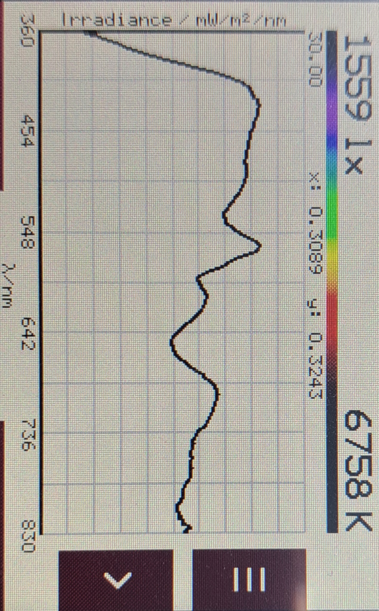
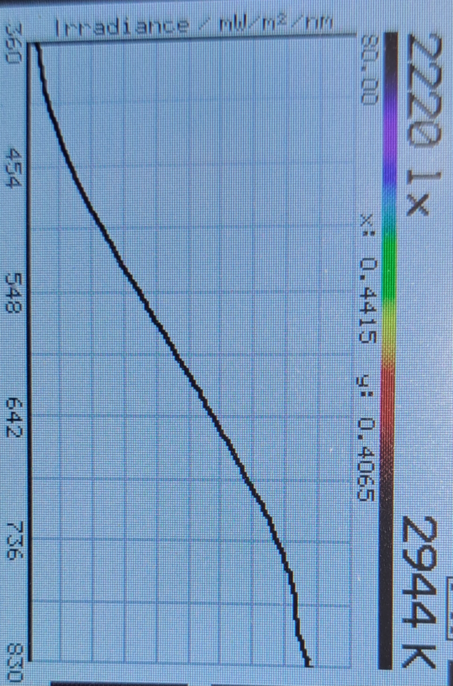
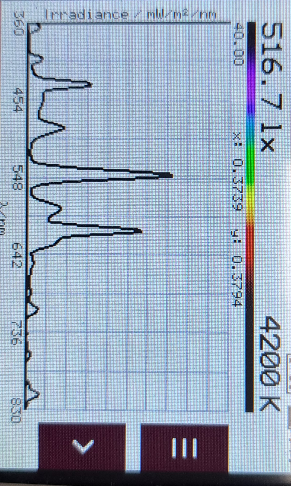
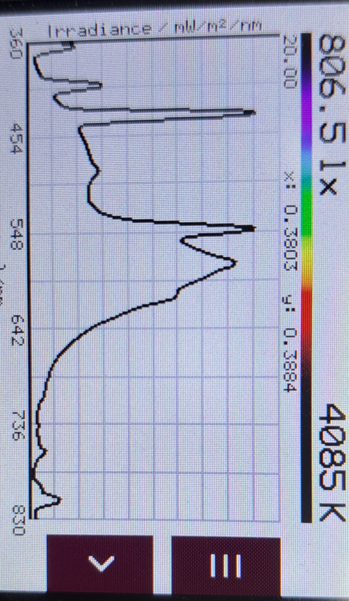
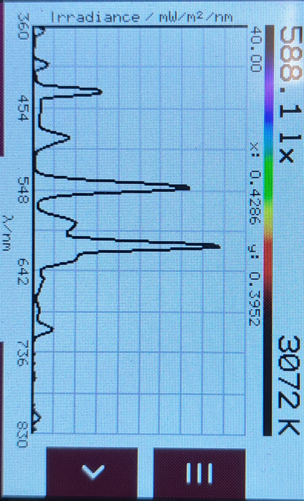
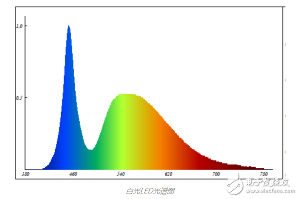

標準光源對色燈箱說明與運用
標準光源對色燈箱是一種專業的照明設備，專門用來模擬各種標準光源環境。它能消除外在環境光源干擾，提供穩定一致的光學環境，廣泛應用於紡織、印刷、塑膠與塗料等行業，進行準確的目視比色與色彩品管。

標準光源對色燈箱的規範與目的
標準光源對色燈箱提供穩定色溫與亮度，可以提供標準環境給ISP 進行色彩的標定與調整。它的主要調整的項目是：
- 自動白平衡標定 (AWB)：在多種標準光源（如 D65, A, TL84）下拍攝色卡，獲取靜態白平衡係數並生成白點條件框。
- 色彩校正矩陣標定 (CCM)：利用 AWB 的 Raw 圖生成顏色校正矩陣，使色彩還原符合人眼視覺或特定目標。
- LSC（鏡頭陰影標定）：為不同光源生成獨立的校正表，以補償因紅外截止濾光片（IR-Cut）透過率隨角度變化而產生的 Color Shading。
- Gamma 調整 (Gamma)：在多種標準光源（主要依賴 D65 光源下的灰階卡進行客觀測試）下針對不同環境照度微調 Gamma，例如夜間模式下可能需要適當壓低暗區以減輕噪聲負擔。
調整完的影像，在做完基礎標定模組（如 BLC、LSC、AE、AWB/CCM、Gamma）已完成，透過工具進行可視化調試，它的主要確認的項目是：
- 自動白平衡：檢測AWB(自動白平衡)通過校正照片中的色溫，以使白色區域看起來更加真實和中性。自動白平衡的目標是消除照片中的色溫偏差，使白色物體在不同的光照條件下看起來都是白色或是盡量接近白色。
- 飽和度與準確性 (Saturation & Accuracy) ：檢測不同色溫下,色彩飽和度與色彩的正確性是否在規範中。
常用光源的光譜
常用光源的光譜圖主要分為連續光譜、不連續帶狀光譜以及兩者結合的混和光譜。光源的光譜功率分布（SPD）決定了該光源的演色性（CRI）與視覺色溫。
- 太陽光（自然光 / D65 標準光源）：
- 光譜類型：完美的連續光譜。
- 特徵說明：從紫外線、可見光（紅橙黃綠藍靛紫）到紅外線皆均勻連續分布，能量在各波段相當平緩。CIE D65 標準光源即是用來模擬平均晝光（色溫約 6500K）的標準。
- 演色性：最高（CRI = 100）。

D65 光源的光譜圖 - 白熾燈與鹵素燈（A 光源））：
- 光譜類型：連續光譜（平滑曲線）。
- 特徵說明：源於鎢絲熱輻射發光。光譜在藍光（短波）區域能量極低，隨著波長增長，在綠、黃、紅光（長波）及紅外線區域的能量急遽上升。這也是為什麼白熾燈色溫較低（約 2856K），視覺上強烈偏黃偏紅。
- 演色性：極佳（CRI ≈ 100）。

A 光源的光譜圖 - 螢光燈 / 省電燈泡（三基色日光燈）：
- 光譜類型：不連續的線狀與帶狀光譜。
- 特徵說明：利用汞蒸氣放電激發燈管壁的螢光粉發光。光譜圖上會出現數個極其突出的不連續尖峰（譜線），通常集中在藍（435nm）、綠（546nm）和紅（611nm）等特定汞發射線與三基色波長上。
- 演色性：：一般（CRI 約 60 - 80），容易導致特定物體顏色失真。

CWF(4200k) 光源的光譜圖
TL84(4000k) 光源的光譜圖
U30(3000k) 光源的光譜圖 - 普通 LED 燈（藍光晶片 + 黃色螢光粉）：
- 光譜類型：雙峰混和光譜。
- 特徵說明：市面上最常見的白光 LED 燈。其光譜圖有一個尖銳的藍光波峰（約 450nm），隨後是一個由螢光粉激發產生的寬溫黃綠光波谷與緩坡（500nm - 650nm）。這種光譜在青光（約 480nm）和深紅光波段常有明顯斷層。
- 演色性：全光譜 LED（Full Spectrum）：近年新技術改用「紫光晶片」搭配「紅、綠、藍多色螢光粉」，演色性可高達 CRI 97 - 98，光譜幾乎與太陽光一模一樣，徹底解決了普通 LED 演色性不足與高藍光危害的問題。。

照明LED 光源的光譜圖
通過 標準光源對色燈箱 和 調整標定圖表(24 colr chart, Q13, 灰階卡) ，進行標定校正與影像目視調整，確保其影像輸出符合預期的視覺效果和行業標準。